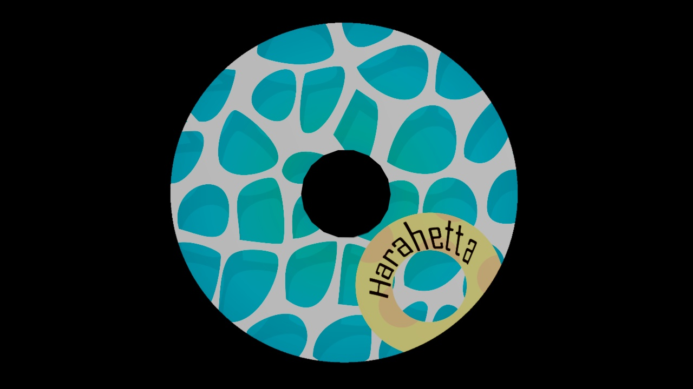
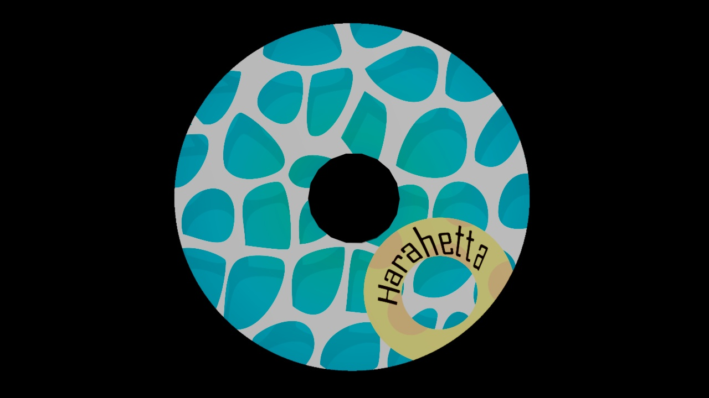

About Me
Hello, I'm Shoki Koya.
I'm currently studying design and film independently while working on practical university projects creating product packaging and brochures.
I use Adobe's After Effects, Photoshop, and Illustrator to continually refine my skills, aiming to meet client requirements flawlessly in future professional engagements.
My strengths lie in genuinely enjoying design work and approaching various projects and products with curiosity and a drive for improvement.
Looking ahead, I aspire to excel as a creator who understands client needs through meticulous communication, delivering designs that surpass expectations.
My portfolio showcases past works and projects.
Projects
CD Package Design
This project was created as part of a junior college class assignment. A classmate acted as the client, simulating a client-creator relationship. Under the rule of not using free materials, I embodied the client's requirements by acting as the girl in the silhouette and implementing various creative techniques.
The brief included abstract expressions such as "POP feel" and "wild", which I interpreted and expressed in an idol-like manner. As mentioned, I posed as the girl and created silhouettes. For realistic images of beer and meat, I substituted with household items and blurred them to obscure details. The challenge of capturing a summer beach in spring was addressed by using paintings and taking photos at dusk, then adjusting them in Photoshop to minimize seasonal differences.


 

3D Modeling Video of the CD Package Design
Fruit Mix Juice Package
I conceptualized a new product, targeting specific market demographics. The project involved preparing materials, structuring the ingredient list, and creating a 3DCG model for brochure design.